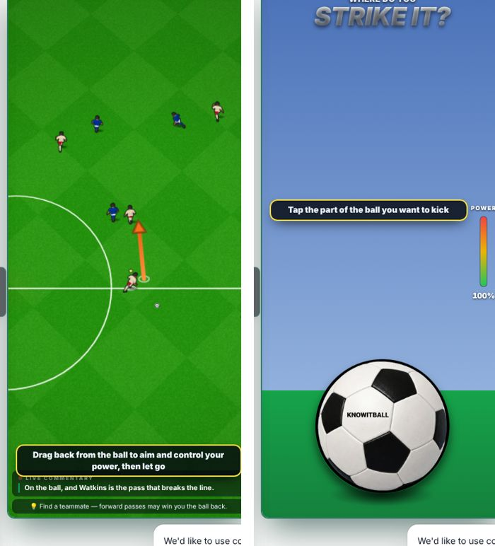
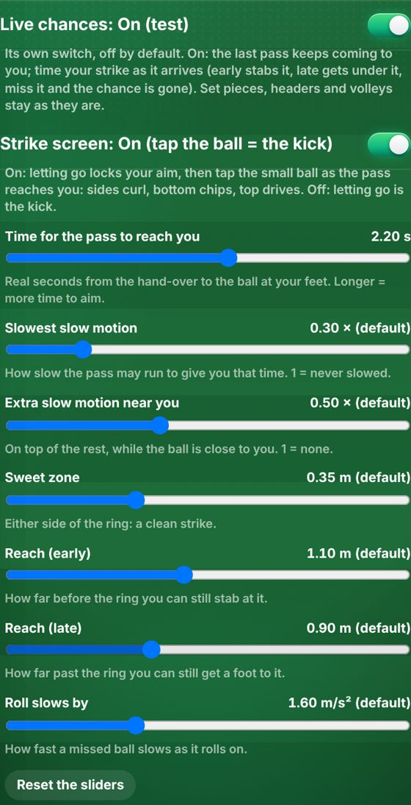
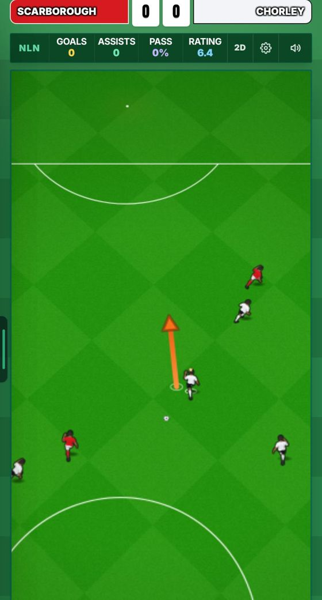
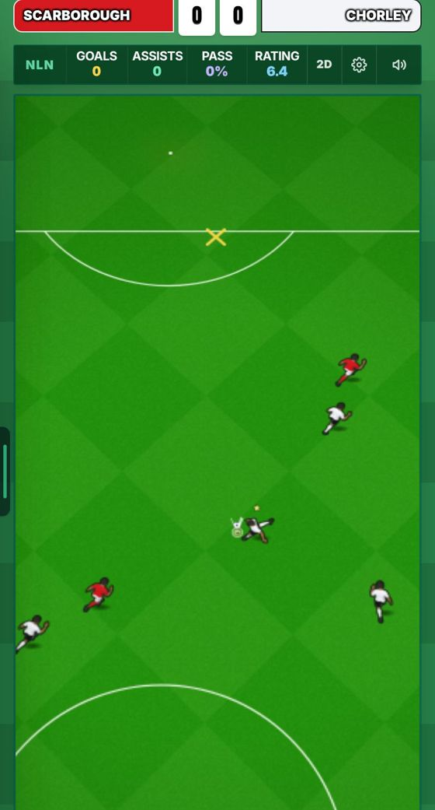
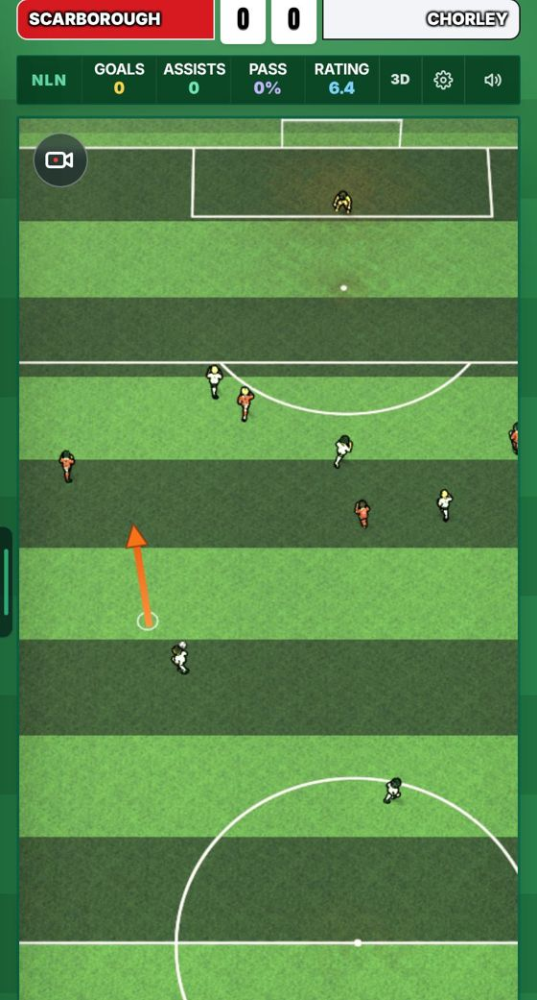
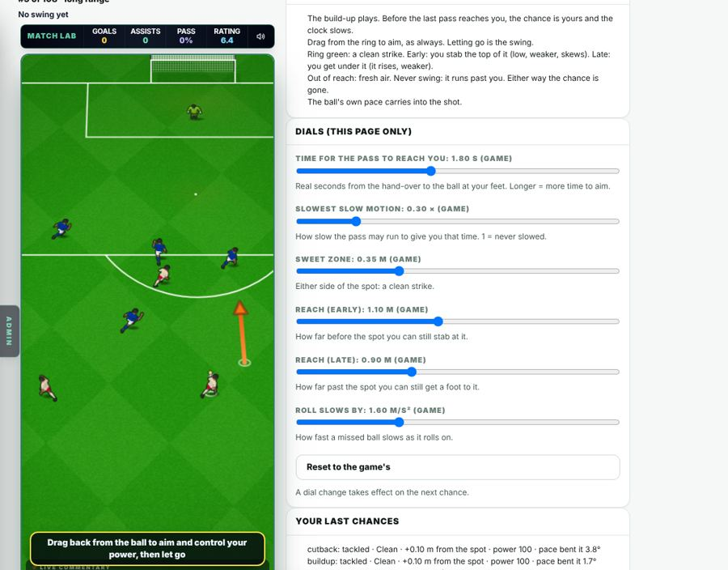

The last pass keeps coming to you. You time your strike as it arrives: early, clean or late changes the shot; miss it and the chance is gone. Behind its own switch, off by default. The game is unchanged with it off.
Made by Leo · 30 Oct 2026
“Every chance is live, moving … you obvs can’t shoot BEFORE or AFTER the ball gets to you or you’d be kicking air, and it also matters where the ball is when you kick it … if u let the ball go past u, chance missed, whatever happens happens.” A switch in Settings, off = the game as now.
Its own switch, on by default. Let go as the pass reaches the ring: that moment is your timing (early, clean or late) and the pass stops there. Then the game’s normal “Strike it?” screen opens: tap where on the ball, as everywhere else (sides curl, bottom chips, top drives). Let go out of reach: fresh air, no kick screen. Switch it off and letting go is the kick.

Played on the test page: clean (+0.05 m), early (−0.57 m, power 87), late (+0.70 m, power 81) and a tap at the bottom (read as a chip, went out long) all read right. In a career league match: 5 of 5. (Yesterday’s small strip at the bottom of the pitch is gone; it was the wrong screen.)
Settings → Match (admins) and Settings → Updates: the Live chances switch, the kick screen switch and all 7 sliders, saved on your phone. The test page keeps its own copies.

After each chance it starts a new one, or (your pick: “After a chance: the same one, live”) the same one again from its build-up. Checked: 3 chances in a row, each new and each live, no button pressed.
The build-up plays as now. About a second before the last pass reaches you, the chance becomes yours and the clock slows. The men keep running to their spots. A ring on the grass shows where you meet the ball.

Drag from the ring to aim, as always. You can start dragging early. Let go as the ball arrives. Kick screen on (default): the normal kick screen then opens and you tap where on the ball. Kick screen off: letting go is the kick, and where the ball is decides where you hit it.

Where the ball is when you let go, along its line:
Clean = within 0.35 m of your foot. Early: struck higher on the ball (driven low), power cut up to 45%, the toe skews it up to 10°. Late: struck under it (it lifts), power cut up to 30%, dragged along the ball’s line. Out of reach: fresh air, chance gone. Never let go: it runs past, chance gone. Measured: on the test page, aimed at 0, 0.6 m early and 0.65 m late, the match read each one right 12 of 12. In a career league match: clean, early, late, let it go and far too early all read right, 6 of 6; in 3D the swing read clean.
A ball rolling across you pulls your shot its way, like real life. A harder strike is bent less. Struck clean coming straight onto you, you get a little pace for free.
A 12 m/s ball rolling across you bends a 60%-power shot about 9°; full power about 6°. In play: 2–5° on clean strikes, 10–15° on late ones.
Every open-play chance where the ball comes to you on the ground: one-on-ones, through balls (a lofted one counts once it’s down at your feet), long range, tight angles, cutbacks, byline crosses, passing moves. Penalties, free kicks and corners stay as they are; headers and volleys keep Harry’s aerial timing.
Of 422 open-play chances the match served (with build-ups), 413 go live (98%). One-on-ones: 15 of 22 (the rest are chipped balls still above knee height when they reach you). A chance with no build-up gets a made-up pass from your nearest team-mate.
Works in both match views. In 3D the ring is drawn on the grass and a press on it grabs the aim. A press on the ring is always the aim, never an order to a team-mate standing near it (in 2D too).

Its own switch on your update card (admins), off by default. On = every match on that phone plays live chances. Off = the game exactly as now (checked: the ball waits at your feet).
The real match, chance after chance, live on for that page only. Pick a kind, with or without build-up, and dials: time for the pass to reach you (1.8 s), slow motion, extra slow motion near you (×0.5), the sweet zone, reach early and late. It shows what each swing read as (clean, early, late, fresh air). The dials never reach the game.

When the build-up ends with you carrying it, the ball comes with you and you strike it on the dribble. It works, but you still read it as “the ball rolls to your spot”. A proper strike-in-stride for carries is the next step if you like it.
A team-mate who is only in the build-up (not the chance) leaves the pitch at the hand-over, as now, so for live chances he goes about a second early while his pass is still rolling.
This adds to the match (CanvasMatch: the live ball, the swing, the ring). Everything is behind the switch; off runs the old path untouched. One-engine guard passes.
25 logic checks (the plan, the ball, every timing zone, the switch off by default). Then played in a real browser on a built copy of the game: the test page (every kind, three timings, let it go, switch off) and a career league match with the switch on, in 2D and in 3D, driven by real drags and releases only. 17 match and keeper test files pass. Squads were the made-up ones (this machine can’t reach the squad database).